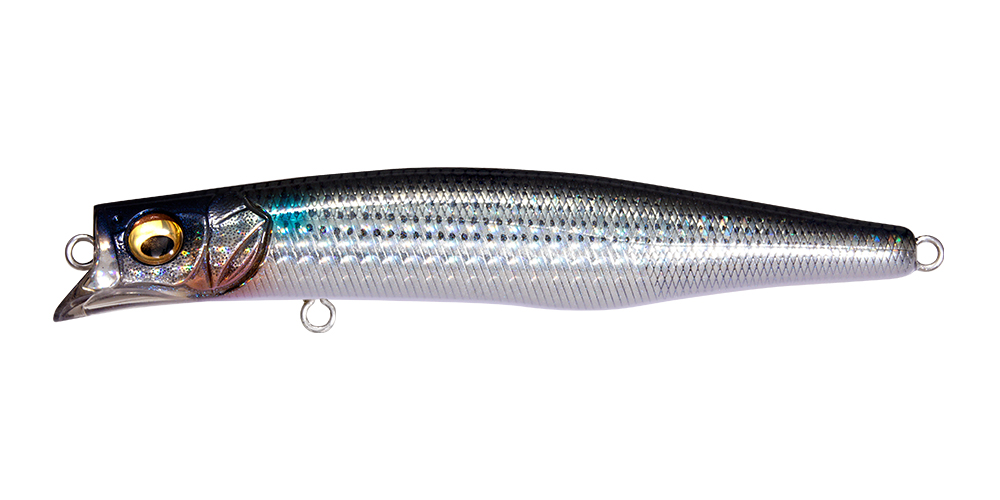
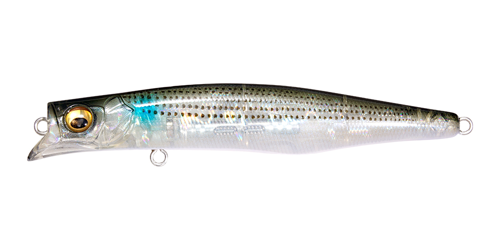
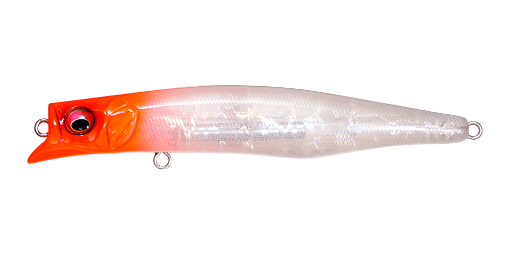
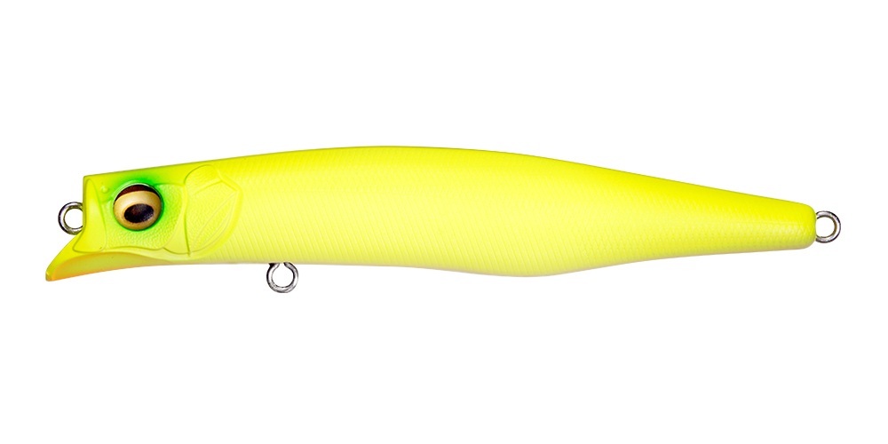

カゲロウMD98F
（KAGELOU MD 98F）
カゲロウMD98FはMegabass（メガバス）のリップレスミッドダイバーです。
カゲロウMDシリーズのジュニアサイズで、イナッコやカタクチなど小型ベイトを捕食している状況に合わせたモデル。独自のスポイラービルで最大0.8mのレンジを引き、表層系のカゲロウより一段下を攻められます。

画像出典:Megabass公式HP
スペック
- メーカー
- Megabass（メガバス）
- タイプ
- フローティング（リップレスミッドダイバー）
- 全長
- 98mm
- 自重
- 12g
- レンジ
- MAX 0.8m
- フック
- #5×2
- 重心移動
- LBOⅡ（PAT.）
- ターゲット
- シーバス
- 価格
- 2,180円（税別）
▼今すぐチェック

カゲロウMD98Fの特徴
小型ベイトのシルエットで、表層の一段下を攻めるスリムなミッドダイバー
-
小型ベイトに合わせたジュニアサイズ
98mmのスリムなボディで、イナッコやカタクチなど小さなベイトを食っているシーバスに合わせやすいサイズ。港湾や河川で扱いやすいのも魅力です。
-
最大0.8mを引くスポイラービル
独自のスポイラービルで最大0.8mのレンジをキープ。表層のカゲロウよりも一段下を通せるので、レンジにシビアな魚にも合わせられます。
-
LBOⅡで小型でもよく飛ぶ
重心移動システムLBOⅡを搭載し、同じサイズのルアーの平均的な飛距離を大きく上回る遠投性能。小型でも届かせたいポイントまでしっかり投げられます。
カゲロウMD98Fの使い方
基本はただ巻き。スローからミディアムで巻くだけで、最大0.8mのレンジを安定して泳ぎます。
表層で反応がないときに、同じコースを一段下で通す使い方がおすすめ。明暗の境目や橋脚まわりでは、流れに乗せてドリフト気味に送り込むと、小型ベイトが流される動きを演出できます。
カゲロウMD98Fの得意な状況
イナッコ・カタクチなど小型ベイトが入っている港湾・河川・干潟。シーバスが表層まで出てこないが、少し下で小さなベイトを追っているときに向いています。
ワンポイント
ベイトが大きくなったらカゲロウMD125F、もっと表層を引きたいときはカゲロウ100Fと、サイズとレンジで持ち替えるとローテーションが組みやすくなります。
カゲロウシリーズの使い分け
| モデル | 全長／自重 | 得意な場面 |
|---|---|---|
| カゲロウ100F | 100mm／12g | レンジ20〜60cm。港湾・河川で扱いやすいコンパクトサイズ |
| カゲロウ124F | 124mm／22g | レンジ0〜20cm。表層特化のシャローランナー |
| カゲロウ155F | 155mm／39g | レンジ0〜20cm。大型ベイト対応のマグナムシャローランナー |
| カゲロウMD98F | 98mm／12g | 最大0.8m。小型ベイト向けのジュニアサイズミッドダイバー（本記事のモデル） |
| カゲロウMD125F | 125mm／21g | 最大0.8m。124Fの一段下を攻めるミッドダイバー |
| カゲロウMD156F | 156mm／39g | 最大0.8m。大型ベイト向けのマグナムミッドダイバー |
カゲロウシリーズは、表層を引く「カゲロウ（無印）」と、一段下の最大0.8mを引く「カゲロウMD」の2系統。ベイトの大きさでサイズを、魚のいるレンジで無印かMDかを選ぶと、ローテーションが組みやすくなります。
人気カラー
公式ラインナップから4色を紹介します（カラー名は公式の表記のまま）。

GG BORAボラを意識したナチュラルカラー。イナッコパターンの基準に。

GP CLEAR BORAクリア系のボラカラー。澄み潮やプレッシャーが高いときに。

GP RED HEAD定番のレッドヘッド。濁りやナイトゲームでの基準カラーに。

DO CHART目立つチャート系。濁りやローライトでアピールしたいときに。
画像出典:Megabass公式HP
カゲロウMD98Fに似ているルアー
-
 カゲロウMD125F
メガバス
詳細はこちら＞
カゲロウMD125F
メガバス
詳細はこちら＞
全長125mm・自重21gの同シリーズ。ベイトがひと回り大きいときに。
-
 コスケ85F
ima
詳細はこちら＞
コスケ85F
ima
詳細はこちら＞
全長85mm・自重11.5gの小型ミノー。レンジ30〜70cmを、よりコンパクトなシルエットで引きたいときに。
-
 ラプター90SS
レガーレ
詳細はこちら＞
ラプター90SS
レガーレ
詳細はこちら＞
全長90mm・自重12gのミノー。同じクラスのサイズで、ローテーションの1本として。